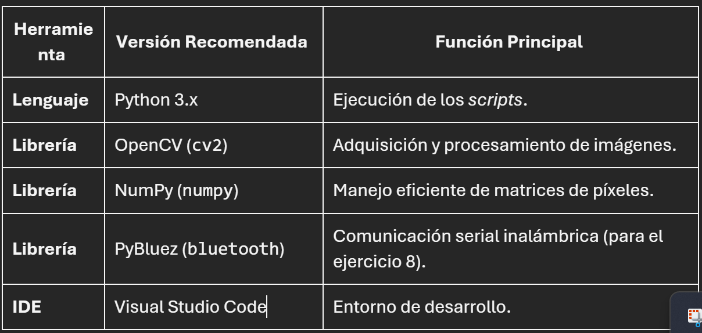

Visión por Computadora: Manipulación de Video y Tracking de Objetos (Python/OpenCV)
Esta sección documenta diversas prácticas de Visión por Computadora realizadas con Python y la librería OpenCV (cv2). Los ejercicios demuestran la capacidad de adquirir streams de video en tiempo real, aplicar filtros de procesamiento de imágenes, superponer gráficos y, finalmente, implementar un sistema avanzado de seguimiento de objetos por color con capacidad de control externo mediante Bluetooth.
Entornos

1. Captura básica y visualización
Establece la conexión con la cámara (cv2.VideoCapture(0)) y muestra el stream hasta que se presiona la tecla 'q'.
import cv2
video = cv2.VideoCapture(0)
while True:
ret, frame = video.read()
if not ret:
break
cv2.imshow("Video", frame)
# Salida del bucle
if cv2.waitKey(1) & 0xFF == ord('q'):
break
video.release()
cv2.destroyAllWindows()
1.1 Conversion a B/N
Aplica un filtro de color para transformar el video capturado a escala de grises, reduciendo la complejidad de la imagen a una sola dimensión de intensidad. Este es un paso fundamental en muchos algoritmos de visión por computadora para la detección de bordes y el procesamiento eficiente.

import cv2
video = cv2.VideoCapture(0)
while True:
ret, frame = video.read()
if not ret:
break
dibujo = frame.copy()
# Convertir el fotograma a escala de grises
dibujo = cv2.cvtColor(dibujo, cv2.COLOR_BGR2GRAY)
cv2.imshow("Video", frame)
cv2.imshow("VIDEO_GRIS", dibujo)
if cv2.waitKey(1) & 0xFF == ord('q'):
break
video.release()
cv2.destroyAllWindows()
2. Manipulación de color
2.1 Tonos azules y RGB -> BGR
Al convertir de BGR (formato nativo de OpenCV) a RGB (formato estándar de visualización), el orden de los canales se invierte. Esta reordenación produce un predominio de tonos azules y cianes en la visualización, ya que los valores asignados al canal Azul se mueven al canal Rojo (índice 2) y viceversa.

import cv2
video = cv2.VideoCapture(0)
while True:
ret, frame = video.read()
if not ret:
break
dibujo = frame.copy()
# Conversión simple BGR a RGB (Reordenamiento de canales)
dibujo = cv2.cvtColor(dibujo, cv2.COLOR_BGR2RGB)
cv2.imshow("ORIGINAL", frame)
cv2.imshow("FILTRO AZUL", dibujo)
if cv2.waitKey(1) & 0xFF == ord('q'):
break
video.release()
cv2.destroyAllWindows()
2.2 Filtro Amarillo
Para generar una fuerte predominancia de tonos amarillos y rojos (que combinados tienden al amarillo), se anula completamente el canal Azul. En la matriz de imagen BGR utilizada por OpenCV, el canal Azul se encuentra en el índice 0.
import cv2
import numpy as np
video = cv2.VideoCapture(0)
while True:
ret, frame = video.read()
if not ret:
break
dibujo = frame.copy()
# Anular el canal azul: [:, :, 0] = 0
# Esto deja activos solo los canales Verde (1) y Rojo (2), resultando en tonos amarillos.
dibujo[:, :, 0] = 0
cv2.imshow("ORIGINAL", frame)
cv2.imshow("FILTRO AMARILLO", dibujo)
if cv2.waitKey(1) & 0xFF == ord('q'):
break
video.release()
cv2.destroyAllWindows()
2.3 Tonos Rosados
Para obtener una dominante de tonos rosados o magenta, se utiliza la combinación de los canales Rojo y Azul mientras se anula completamente el canal Verde. En la matriz BGR de OpenCV, el canal Verde se encuentra en el índice 1.

import cv2
import numpy as np
video = cv2.VideoCapture(0)
while True:
ret, frame = video.read()
if not ret:
break
dibujo = frame.copy()
# Anular el canal verde: [:, :, 1] = 0
# Esto deja activos solo los canales Azul (0) y Rojo (2), resultando en tonos magenta/rosados.
dibujo[:, :, 1] = 0
cv2.imshow("ORIGINAL", frame)
cv2.imshow("FILTRO ROSA", dibujo)
if cv2.waitKey(1) & 0xFF == ord('q'):
break
video.release()
cv2.destroyAllWindows()
Superponer figuras
Esta sección demuestra la capacidad de dibujar figuras geométricas (líneas, rectángulos, círculos) y texto sobre los fotogramas del video en tiempo real. Esta técnica es esencial para el tracking, ya que permite visualizar el centro de los objetos, las áreas de interés (ROI) o los cuadros delimitadores.
Dibujo de línea y rectángulo
Este script dibuja una línea diagonal de esquina a esquina y un rectángulo delimitador que enmarca el video.

import cv2
video = cv2.VideoCapture(0)
while True:
ret, frame = video.read()
if not ret:
break
dibujo = frame.copy()
# Línea diagonal: Dibuja una línea roja desde la esquina superior izquierda (0,0) a la inferior derecha (640, 480).
cv2.line(dibujo, (0, 0), (640, 480), (0, 0, 225), thickness=3, lineType=cv2.LINE_AA)
# Rectángulo de marco: Dibuja un rectángulo azul alrededor del borde de la imagen.
cv2.rectangle(dibujo, (0, 0), (640, 480), (255, 0, 0), thickness=10, lineType=cv2.LINE_AA)
cv2.imshow("Video", frame)
cv2.imshow("VIDEO02", dibujo)
if cv2.waitKey(1) & 0xFF == ord('q'):
break
video.release()
cv2.destroyAllWindows()
3.2 Línea, Rectángulo, Círculo y Animación
Este ejercicio combina varias figuras geométricas y introduce el concepto de animación usando variables dinámicas (cx, cy). La actualización constante de estas variables simula el movimiento del círculo a través del frame, lo cual representa un concepto clave para visualizar el centro de un objeto en movimiento en aplicaciones de tracking.

import cv2
video = cv2.VideoCapture(0)
cx = 0
cy = 0
while True:
ret, frame = video.read()
if not ret:
break
dibujo = frame.copy()
# Figuras estáticas
cv2.line(dibujo, (0, 0), (640, 480), (0, 0, 225), thickness=3, lineType=cv2.LINE_AA)
cv2.rectangle(dibujo, (0, 0), (640, 480), (255, 0, 0), thickness=10, lineType=cv2.LINE_AA)
# Círculo animado (centro en cx, cy)
cv2.circle(dibujo, (cx, cy), 100, (255, 0, 0), thickness=10, lineType=cv2.LINE_AA)
# Texto Fijo
cv2.putText(dibujo, "TEXTO FIJO", (320, 240), cv2.FONT_HERSHEY_SIMPLEX, 2, (255, 0, 0), thickness=2, lineType=cv2.LINE_AA)
# Actualización de posición para animación
# El operador módulo (%) asegura que la posición se reinicie al llegar al borde (640x480).
cx = (cx + 1) % 640
cy = (cy + 1) % 480
cv2.imshow("Video", frame)
cv2.imshow("VIDEO02", dibujo)
if cv2.waitKey(1) & 0xFF == ord('q'):
break
video.release()
cv2.destroyAllWindows()
3.3 Division de la camara por secciones de color
Este ejercicio demuestra el concepto de Región de Interés (ROI) a través de la indexación de matrices de NumPy. Se aplica un filtro de color diferente a cada cuadrante del frame al anular selectivamente un canal de color en una porción específica de la matriz de la imagen.

import cv2
import numpy as np
video = cv2.VideoCapture(0)
while True:
ret, frame = video.read()
if not ret:
break
dibujo = frame.copy()
# Cuadrante 1 (Superior Izquierdo): Anular Canal Verde
# Esto resulta en tonos magenta/rosados (Rojo + Azul).
# Coordenadas: [Filas 0:240 (Y), Columnas 0:320 (X), Canal Verde (1)] = 0
dibujo[0:240, 0:320, 1] = 0
# Cuadrante 2 (Inferior Derecho): Anular Canal Azul
# Esto resulta en tonos amarillos (Rojo + Verde).
# Coordenadas: [Filas 240:480 (Y), Columnas 320:640 (X), Canal Azul (0)] = 0
dibujo[240:480, 320:640, 0] = 0
cv2.imshow("Video", frame)
cv2.imshow("VIDEO02", dibujo)
if cv2.waitKey(1) & 0xFF == ord('q'):
break
video.release()
cv2.destroyAllWindows()
Seguimiento de objeto y control remoto
Estos códigos aplican la segmentación por color HSV y el cálculo de contornos para localizar el objeto más grande en el frame y calcular su desviación respecto al centro. Esto simula la lógica de un sistema de seguimiento que podría ser utilizado para controlar un sistema robótico.
Deteccion y tracking por color
Este script localiza un objeto de color azul específico, calcula su posición (x, y) y la compara con el centro del frame para determinar el error direccional (ErrorX, ErrorY), imprimiéndolo en la consola.
import cv2
import numpy as np
import time
video = cv2.VideoCapture(0)
# Rango de color azul en HSV
bajo = np.array([90, 50, 20], dtype=np.uint8)
alto = np.array([145, 255, 255], dtype=np.uint8)
while True:
ret, frame = video.read()
if not ret:
break
dibujo = frame.copy()
hsv = cv2.cvtColor(dibujo, cv2.COLOR_BGR2HSV)
# 1. Segmentación por Color (Máscara)
mask = cv2.inRange(hsv, bajo, alto)
result = cv2.bitwise_and(frame, frame, mask=mask)
# 2. Encontrar Contornos
lista_cont, herarquia = cv2.findContours(mask, cv2.RETR_EXTERNAL, cv2.CHAIN_APPROX_SIMPLE)
# 3. Identificar el Contorno Más Grande (el objeto de interés principal)
area_grande = 0
contorno_pelota = None
if lista_cont:
for contn in lista_cont:
area = cv2.contourArea(contn)
if (area > area_grande):
area_grande = area
contorno_pelota = contn
# 4. Calcular Centro y Radio del Círculo Envolvente
if contorno_pelota is not None:
(x,y),radio = cv2.minEnclosingCircle(contorno_pelota)
# Dibujar el círculo y el punto central de seguimiento
cv2.circle(frame,(int(x),int(y)),int(radio),(0,255,0),3)
cv2.circle(frame,(int(x),int(y)),3, (0,255,0),3)
# 5. Calcular el Error (Desviación respecto al centro del frame)
h = frame.shape[0]
w = frame.shape[1]
errorx = x - (w / 2)
errory = y - (h / 2)
print(f"ErrorX: {errorx:.1f}, ErrorY: {errory:.1f}")
# 6. Imprimir la Dirección de Corrección (Lógica de control)
if (errorx > 0):
print("IZQUIERDA") # El objeto está a la derecha del centro (ErrorX positivo), el robot debe girar a la IZQUIERDA.
elif(errorx < 0):
print("DERECHA") # El objeto está a la izquierda del centro (ErrorX negativo), el robot debe girar a la DERECHA.
if (errory > 0):
print("ABAJO")
elif(errory < 0):
print("ARRIBA")
time.sleep(0.5)
# Visualizaciones en tiempo real
cv2.imshow("MASK (Blanco: Azul detectado)", mask)
cv2.imshow("Objeto Azul sobre Fondo Negro", result)
cv2.imshow("Video Original (Tracking)", frame)
if cv2.waitKey(1) & 0xFF == ord('q'):
break
video.release()
cv2.destroyAllWindows()
4.2 Tracking con Bluetooth
Este es el ejercicio más avanzado, ya que extiende la lógica de tracking local añadiendo la comunicación serial inalámbrica mediante un socket Bluetooth. El script envía comandos direccionales (IZQUIERDA, DERECHA, CENTRO, etc.) a un dispositivo externo (como un microcontrolador ESP32 o Arduino con módulo Bluetooth), permitiendo el control autónomo de un robot o actuador basado en la visión por computadora.
import cv2
import numpy as np
import time
import bluetooth
# ======== CONEXIÓN BLUETOOTH CON ESP32 ========
port = 1
# Crea el socket Bluetooth usando el protocolo RFCOMM (usado para serial)
sock = bluetooth.BluetoothSocket(bluetooth.RFCOMM)
sock.settimeout(20)
MAC_ADDRESS = "10:06:1C:97:72:DA" # <-- ¡REEMPLAZAR CON TU DIRECCIÓN MAC!
print("Intentando conectar con el ESP32...")
while True:
try:
# Intenta conectar con la dirección MAC y el puerto especificados
sock.connect((MAC_ADDRESS, port))
print("¡Conectado al ESP32!")
break
except Exception as e:
print(f"Error en la conexión. Reintentando: {e}")
time.sleep(1)
# ======== CONFIGURACIÓN DE LA CÁMARA Y DETECCIÓN ========
video = cv2.VideoCapture(0)
# Rango de color azul en HSV
bajo = np.array([90, 50, 20], dtype=np.uint8)
alto = np.array([145, 255, 255], dtype=np.uint8)
while True:
ret, frame = video.read()
if not ret:
break
dibujo = frame.copy()
hsv = cv2.cvtColor(dibujo, cv2.COLOR_BGR2HSV)
mask = cv2.inRange(hsv, bajo, alto)
result = cv2.bitwise_and(frame, frame, mask=mask)
lista_cont, herarquia = cv2.findContours(mask, cv2.RETR_EXTERNAL, cv2.CHAIN_APPROX_SIMPLE)
# Lógica de Detección de Contorno (Buscar el más grande)
if len(lista_cont) > 0:
area_grande = 0
contorno_pelota = None
for contn in lista_cont:
area = cv2.contourArea(contn)
if area > area_grande:
area_grande = area
contorno_pelota = contn
if contorno_pelota is not None:
(x, y), radio = cv2.minEnclosingCircle(contorno_pelota)
# Dibujar en el frame para visualización
cv2.circle(frame, (int(x), int(y)), int(radio), (0, 255, 0), 3)
cv2.circle(frame, (int(x), int(y)), 3, (0, 255, 0), 3)
h = frame.shape[0]
w = frame.shape[1]
errorx = x - (w / 2) # Desviación horizontal
errory = y - (h / 2) # Desviación vertical
# ======== ENVÍO DE COMANDOS AL ESP32 ========
try:
# Umbrales de corrección (50 píxeles): Evita el "ruido"
if errorx > 50:
mensaje = "IZQUIERDA"
elif errorx < -50:
mensaje = "DERECHA"
elif errory < -50:
mensaje = "ARRIBA"
elif errory > 50:
mensaje = "ABAJO"
else:
mensaje = "CENTRO"
# Envío del mensaje codificado a través del socket
sock.send(mensaje.encode('utf-8'))
print("Enviado:", mensaje)
except Exception as e:
print("Error al enviar datos:", e)
# ======== MOSTRAR RESULTADOS ========
cv2.imshow("MASK (Blanco: Azul detectado)", mask)
cv2.imshow("Objeto Azul sobre Fondo Negro", result)
cv2.imshow("Video Original (Tracking + Bluetooth)", frame)
if cv2.waitKey(1) & 0xFF == ord('q'):
break
time.sleep(0.3) # Controla la velocidad de procesamiento y comandos
video.release()
cv2.destroyAllWindows()
sock.close() # Cierra la conexión Bluetooth
Conclusion y futuro
El desarrollo de este portafolio subraya la capacidad esencial de OpenCV y Python para transformar una fuente de video cruda en datos procesables, abarcando desde la manipulación básica de píxeles (filtros y conversión de color BGR a HSV) hasta la implementación de complejos algoritmos de Visión por Computadora (CV) para el seguimiento de objetos (tracking). La práctica más significativa fue la exitosa integración de la CV con la comunicación inalámbrica (Bluetooth), demostrando cómo calcular el error direccional (ErrorX, ErrorY) de un objeto de interés y convertir esa desviación en comandos de control (IZQUIERDA, DERECHA). Este proceso establece un puente funcional entre el mundo digital (visión) y el mundo físico (robótica), siendo el principio rector de los sistemas de automatización y el control robótico basado en visión.